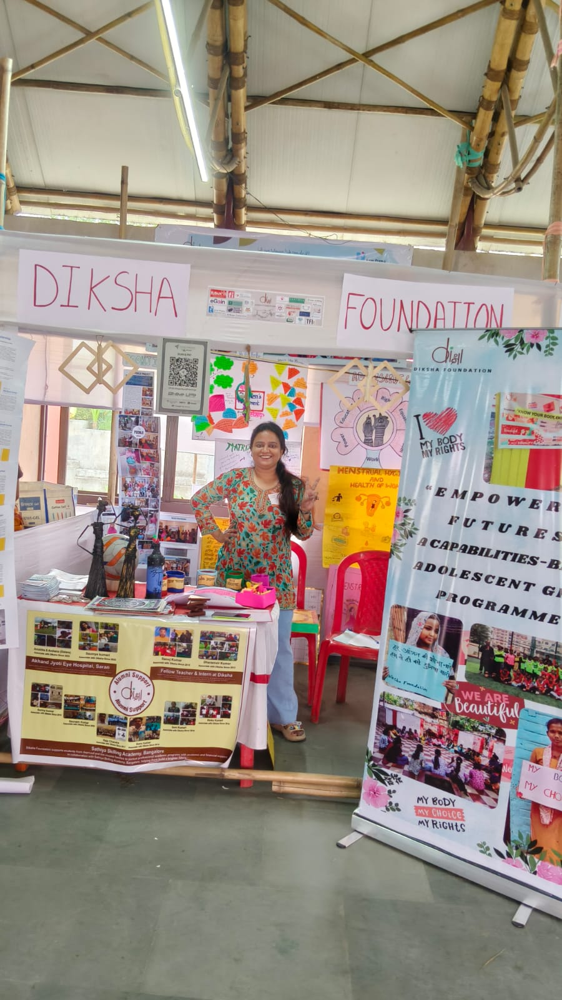
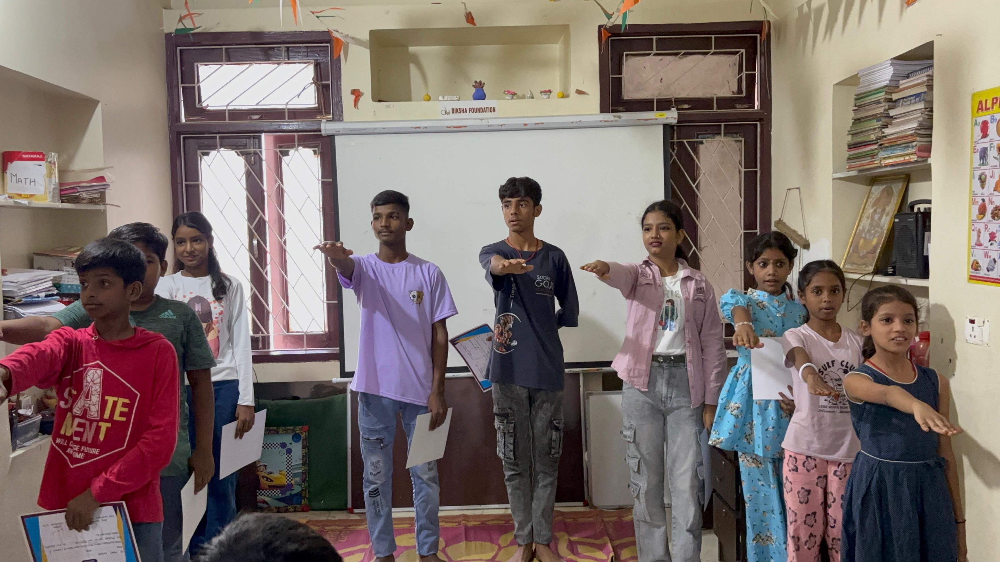
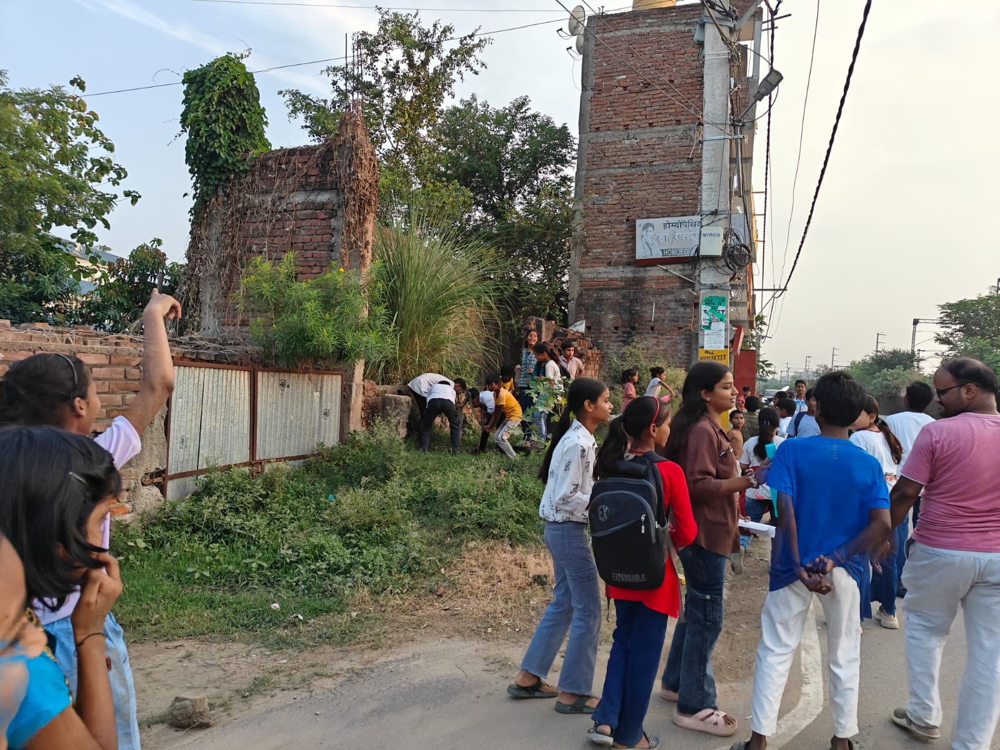
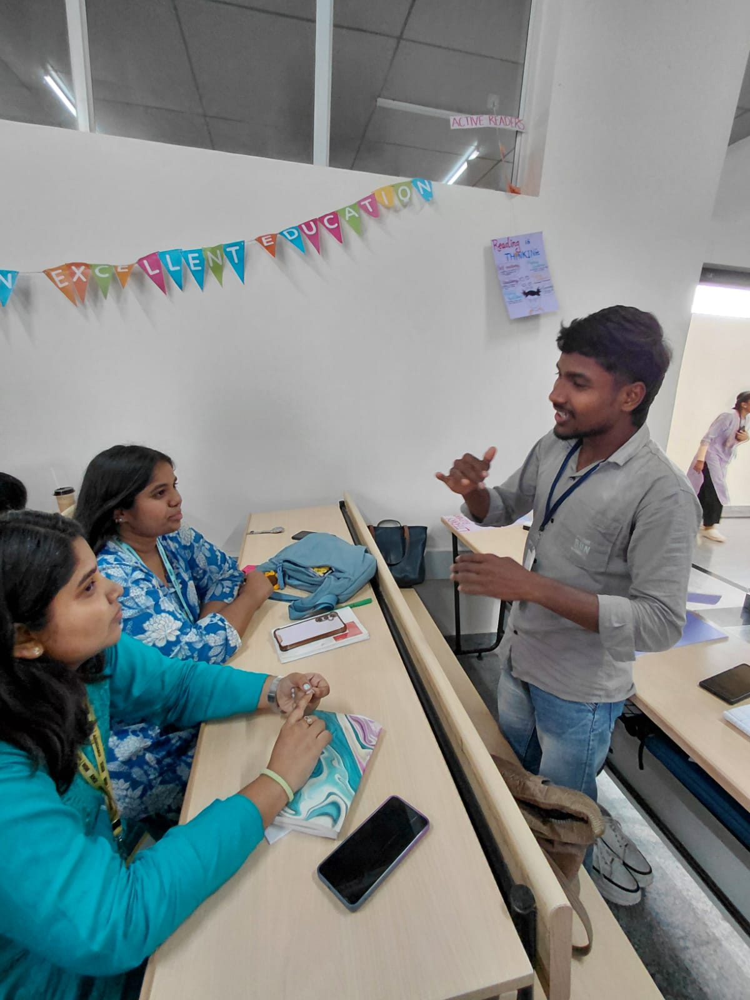
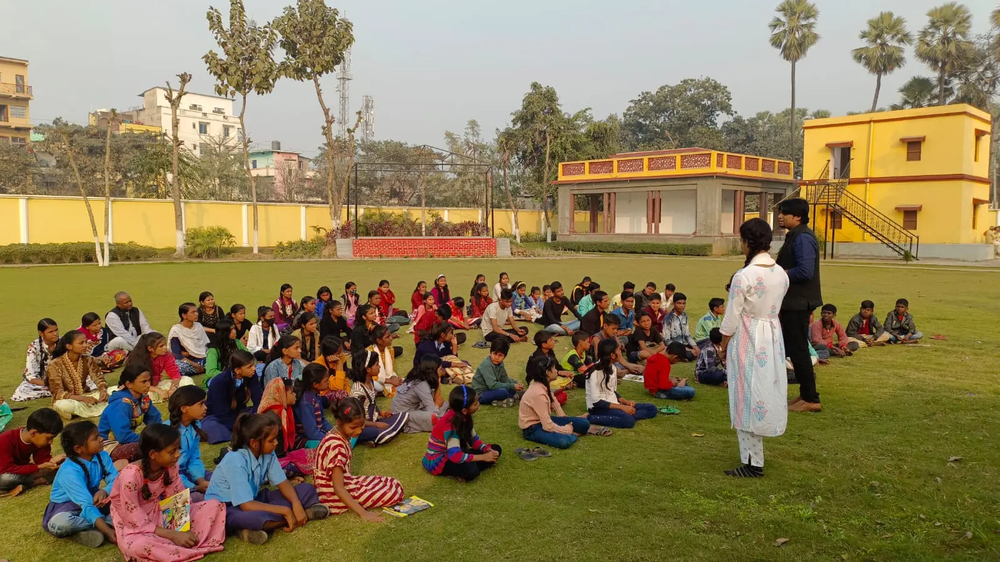
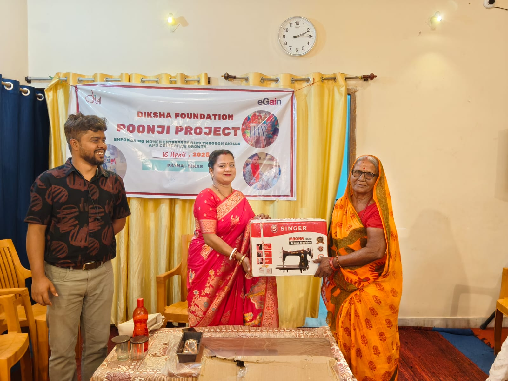

Since 2010
KHEL Patna
Where KHEL began—and where many children have grown into youth leaders, mentors and educators.
Visit KHEL PatnaOur projects · Bihar
A child may come to KHEL for help with schoolwork and stay to rehearse a play, build a maths game, practise football or run for Bal Sansad.
Diksha’s other programmes work with adolescent girls, students who need scholarships and women building livelihoods. The details differ because the people and circumstances differ.
Begin with KHEL



01 · Our flagship programme
KHEL stands for Knowledge Hub for Education and Learning.
It is not another school. It is a steady place to study, ask questions, make things, rehearse, play and take responsibility. What begins with homework can open into a play, a football team, a science experiment or a student-led decision.

Since 2010
Where KHEL began—and where many children have grown into youth leaders, mentors and educators.
Visit KHEL PatnaSince 2022
A learning centre at Swami Sahajanand Saraswati Ashram, rooted in long-term relationships with children and families in Bihta.
Visit KHEL BihtaSince 2024
A young centre in Samastipur, where study, digital learning, creativity, sport and children’s participation meet.
Visit KHEL Sarairanjan02 · Work happening now
Some programmes deepen learning. Others help a young person stay in education, build a livelihood or make a decision with greater confidence.
2025–2028 · Adolescent girls
Girls meet in small groups to learn, use technology, understand rights and think through decisions about education, health and work.
Visit Empowering FuturesWith support from Azim Premji Foundation
2020–2023 · 2026–2028
The first Patna cohort brought English together with theatre, film, public speaking and travel. A new STEM cohort begins at NIT Patna in 2026.
Visit English Access
Since 2021 · Women and livelihoods
Women choose the work. Poonji helps with equipment, financial literacy, mentoring and follow-up.
Visit PoonjiHigher education · Since 2023
Four students are currently supported through the Tilak Raj Gauri and Renu Sinha memorial scholarships. The programme began with Bharat Education Scholarship.
Meet the scholars03 · Project archive
These projects show how Diksha learned, built partnerships and shaped the work that continues today.
Work across 50 informal settlements brought together residents, sanitation workers, health services and city officials.
Read the project storyWork with schools on inclusive education—supporting teachers and institutions to make dignity and participation part of everyday learning.
A platform for young people to learn together, take public action and bring youth voice into Bihar’s civic life.
Young people explored constitutional values through everyday tasks, dialogue and civic action.
Adolescents examined gender, relationships and the decisions that shape their education, health and future.
Next: the project stories
The next pages will show how each centre works, who makes it possible and what children create there.